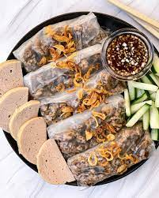
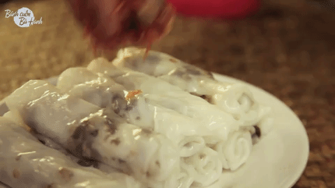

Banh Cuon
Home
Recipes


Description
Banh Cuon is a traditional Vietnamese dish that are rice rolls filled with pork.
They are typically eaten with a combination of cucumbers, fried shallots, vietnamese ham and a dipping sauce.
A comfort food for vietnamese cuisine it is a nice savory dish to satisfy any craving.
Ingredients
Batter
- 1 cup rice flour
- 1 cup tapioca
- 4 cups room temperature water
- 1 tbsp vegatable oil
- 1 tsp salt
Filling
- 1/2 cup wood ear mushrooms
- 1 lb ground pork
- 2 tsp fish sauce
- 1 tsp sugar
- 1 tsp pepper
- 1/2 yello onion minced
- 1/2 cup vegatable oil
- 3 stalks green onions minced
- 1 cha lua thinly sliced
- 2 cucumbers thinly sliced
- 1 tbsp fried shallots
- 12 mint leaves
- Vietnamese dipping sauce, click here for a recipe
Steps
- Making the batter- Combine rice flour, tapioca flour, room temperature water, vegetable oil, and salt in a large bowl. Mix well and let it rest for 30 minutes.
- While the batter is resting, soak the wood ear mushrooms in a bowl of water for 20 minutes. Once done soaking, wring out as much water as possible. Coarsely chop them into small pieces and set aside.
- Combine the pork, fish sauce, sugar, and pepper. Marinate for 10 minutes and set aside.
- Making the filling- In a large pan, heat 1 tablespoon of vegetable oil over medium high heat. Add in the onions and cook for 30 seconds. Add in the ground pork and wood ear mushrooms and cook until well done (about 2-3 minutes). Set filling aside.
- Once the batter has rested for 30 minutes, the water should have separated from the rice flour mixture below. Pour out the water on the top layer into a liquid measuring cup. Note how much water is in the measuring cup and throw away that water. Fill the measuring cup with the same amount of water that was poured out. Pour that water into the rice batter and mix. Set aside.
- You are now ready to make your banh cuon. Make sure you're ready with your batter and filling near your pan. Use a circular 8 inch nonstick pan. Heat over low heat. Spoon 1/8 cup of batter into a thin layer covering the bottom of the pan. Cover it with the lid and let it cook for 1-2 minutes. Once done, flip the pan upside down onto a flat surface so the skin comes out in one piece. This may take some practice. Let the first skin rest for ~10 seconds so you don't burn your fingers. Fill the skin with 1 tablespoon of the filling and roll it up like an egg roll.
- Repeat this process until all the batter is used up.
- Making strong oil- Heat 1/2 cup of vegetable oil over medium high heat until it starts to sizzle (1-2 minutes). Pour hot oil over green onions in a small bowl.
- Preparing your banh cuon plate- Add some banh cuon to a plate. Spoon some scallion oil over the top. Top with cha lua, mint, fried shallots, and cucumbers. Sprinkle nuoc cham over the top of everything and enjoy!
Back to top of page